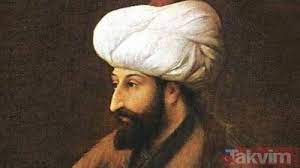
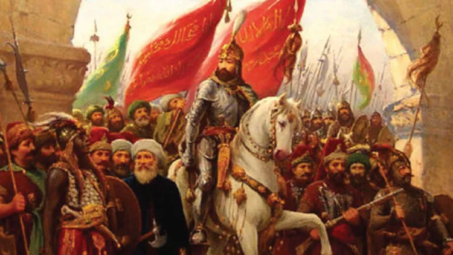

Fatih Sultan Mehmet Kimdir?
Yurt dışında ''Büyük Türk'' ve ''Dahi Türk'' lakaplarıyla bilinen Fatih Sultan Mehmet, çocukluğunda iyi bir eğitim gördü. Türkçe ve Arapça dışında Farsça, Sırpça, Latince ve Yunanca öğrendi. İlk kez tahta çıktığında sadece 12 yaşındaydı. 21 yaşında İstanbul'u fethetti ve Osmanlı İmparatorluğunun ''7 Cihana Hükmeden'' bir imparatorluk olmasını sağladı.
İkinci kez tahta çıktığında 19 yaşında olan Fatih Sultan Mehmet'in en büyük hedefi İstanbul'u fethetmekti. Bu nedenle tahta çıkar çıkmaz İstanbul'un fetih hazırlıklarına başladı. Hisar tamamlandığında boğazın kontrolü tamamen Osmanlı'nın kontrolüne geçecekti. Bizans İmparatoru Konstantinos, Osmanlı Devletine defalarca elçi gönderse de Fatih Sultan Mehmet, her defasında elçi ile görüşmeyi reddetti.
Developer: Tetra

Fatihin Önemli Fetihleri.
- İstanbul (1453)
- Amasra (1359)
- Sinop (1460)
